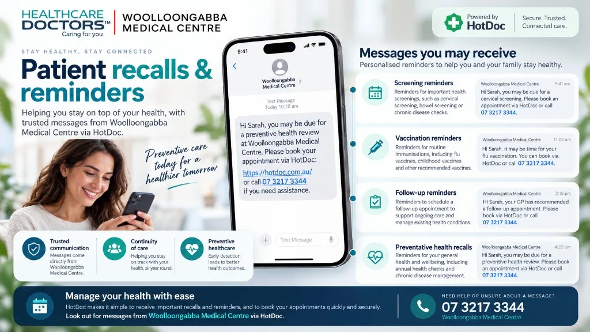
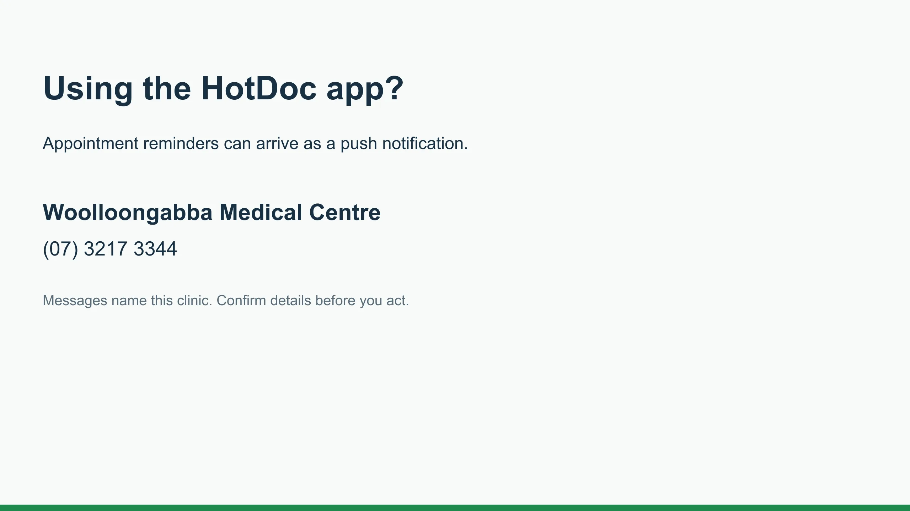

Recall or reminder — what is the difference?
Reminders help you keep an existing appointment or preventive task on track — for example confirming or cancelling a booking. Recalls ask you to return or book because follow-up is needed for your care. Both support continuity; a recall is more likely when something in your record needs review.
When patients may receive a recall
- Test results — when a result should be discussed with a doctor or follow-up is advised.
- Specialist correspondence — when a letter or report needs review and a next step.
- Follow-up care — when your doctor has recommended review after treatment, procedures or ongoing concerns.
- Preventive care reminders — when screening, immunisation or other preventive care is due for discussion.
Not every result or letter leads to a call. If your doctor asked you to return, please book even if you have not been contacted.

How HotDoc may deliver these messages
Woolloongabba Medical Centre may use HotDoc to send appointment reminders and health messages. Depending on your settings, you may receive an SMS, email or app notification. Some messages ask you to verify your identity before viewing details or booking.
For help recognising legitimate HotDoc messages, see Identifying HotDoc scam messages.
Keep your contact details up to date
Please keep your mobile number, email and address current so the team can reach you when follow-up is required. Tell reception when details change, or update them when you complete patient forms.
If you were asked to return for results or follow-up, make the appointment even if we have not contacted you.
Recall and reminder questions
What is the difference between a recall and a reminder?
A reminder usually supports an appointment or preventive task you already know about, such as confirming an upcoming visit. A recall asks you to return or book because follow-up is clinically appropriate — for example after results, correspondence or recommended care.
When might I receive a recall?
You may receive a recall after test results, specialist or other correspondence, follow-up care recommended by your doctor, or preventive care that is due. The exact reason depends on your clinical record.
Will recalls come through HotDoc?
Yes, HotDoc may be used to deliver recall and reminder messages by SMS, email or app notification. You can also contact the clinic directly if you prefer to book by phone.
Why do you need my current contact details?
Accurate phone, email and address details help the team reach you when follow-up is required. Update your details with reception or when completing patient forms.
This page provides general information about practice recall and reminder processes. It does not replace individual medical advice. If you are worried about symptoms or a result, book review or call the clinic.